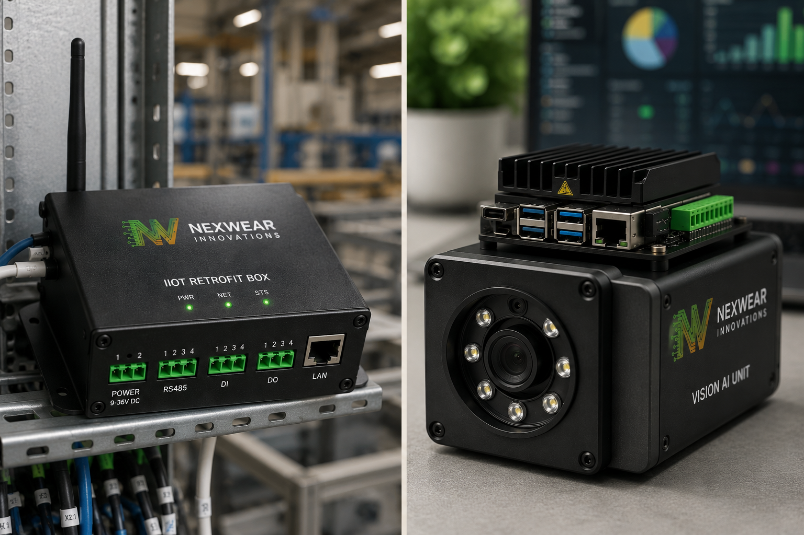
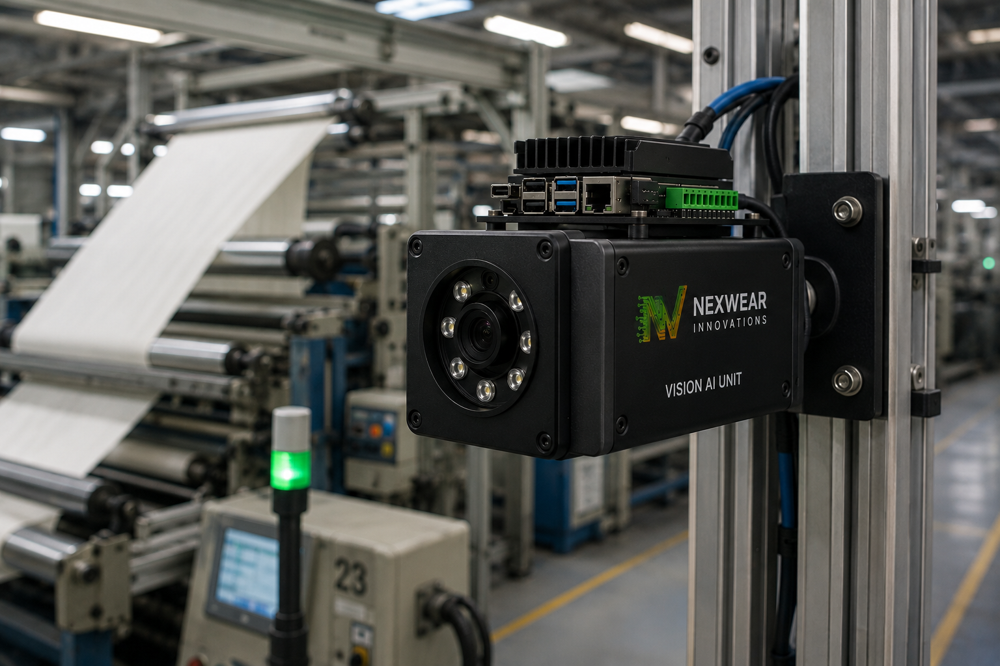
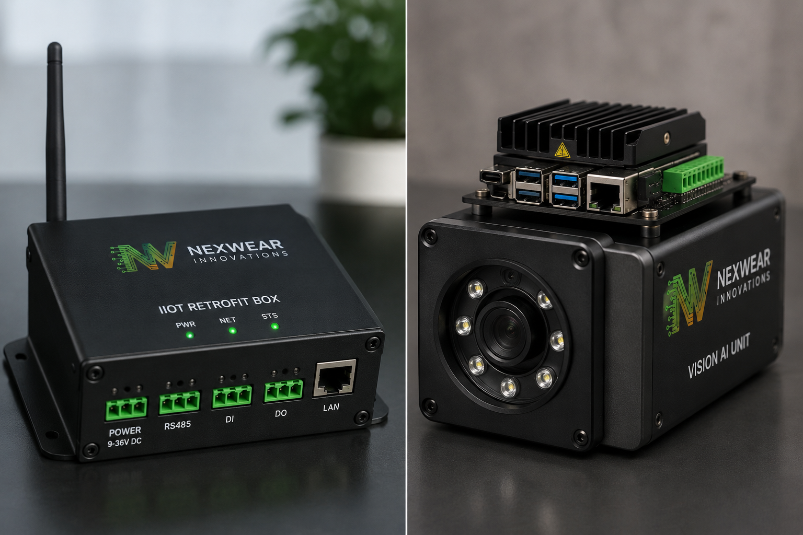
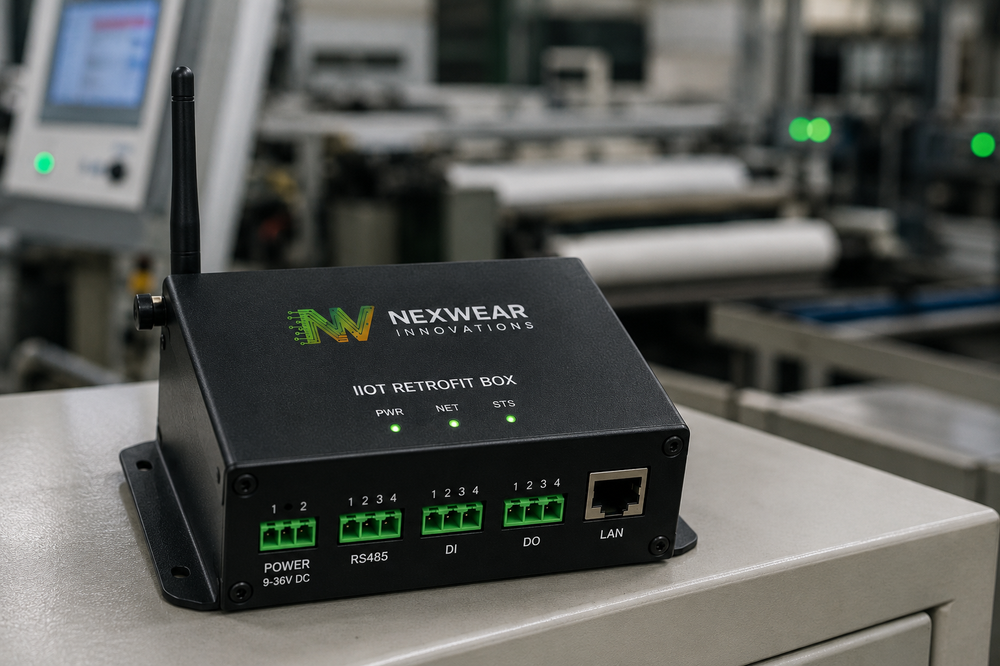

Do you know your factory's efficiency right now?
Most owners find out tomorrow what happened today. Nexwear puts real-time production data on the sewing machines you already own — no replacements — so you can answer that question in one glance, from anywhere in the world.
Four questions your floor should answer in one second
{{ q.q }}
{{ q.b }}
{{ c.b }}
We are Nexwear. We give the machines you already own a voice — live.

The IIoT Retrofit Box
One small unit fits onto a sewing machine you already run and starts reporting what that machine is doing — every minute of every shift. No new machines, no rewiring the line, no stopping production to install it.
Under ten minutes per machine. Then the floor starts talking.
The AI Vision System
Some things a machine signal simply cannot prove. Wherever the retrofit box can't give you the accuracy you need — your bottleneck stations, your checking tables, the operations that decide the whole line — the Vision unit goes on instead and watches.
You don't buy it for 300 machines. You put it exactly where you need deeper data, and it feeds the same dashboard.
Your factory, live, on one screen
This is the real thing — the numbers below move as the shift moves. Open it from the office, from home, from another country.
Demonstration data, moving the way a real shift moves. Every metric here is one the retrofit box or the vision unit captures today.
Data today, not a report tomorrow
Every one of these is a decision you already make. The only question is whether you make it during the shift or after it.
We monitor the sewing floor and the quality checking area only. Cutting, fusing, embroidery, washing and finishing are not offered today — we stay where we can promise accuracy.
More output. Same machines. Same manpower.
A low-cost upgrade on machines you already own, paying for itself inside a year.
{{ p.t }}
{{ p.b }}
About Nexwear Innovations
We help garment factories raise productivity by 10–20% through real-time production tracking and machine-level visibility — without replacing a single sewing machine.
To build the operating system for smart garment manufacturing — making Industry 4.0 affordable for apparel factories, starting in Tiruppur and scaling across South India.
{{ p.bio }}
Four steps, one line at a time
{{ r.t }}
{{ r.b }}
We walk your floor. You keep the report.
Our engineers survey your sewing lines and checking tables, list exactly what we can measure on each machine, and point out the few stations that need the vision unit. No stoppage, no obligation.
5/55A Chettiyar Street, Jambunathapuram
Musiri (TK), Tiruchirapalli (DT)
Tamil Nadu — 621211